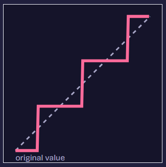

GIF files
A palette of at most 256 colors is why some old web images look posterized.
A channel value runs from 0 to 255. With n bits there are 2n allowed levels, and every value snaps to the closest one. The dashed line is the smooth original. The colored steps are what survives.
Standard 24-bit color uses 8 bits per channel, which is 256 levels per channel and about 16.7 million colors. An old 256-color GIF instead stores one number per pixel that points into a lookup table of 256 chosen colors.

Each round shows an image at a secret bit depth of 2, 4, or 8 bits per channel. Look for flat bands in the sky and blocky hills, then pick your answer.
Pick a number to lock in your guess.
Audio stores each sample as a number, and bit depth works the same way. A CD uses 16 bits, which gives 65,536 levels. Fewer bits mean coarser steps, and the rounding error you hear as hiss. Each bit drop adds about 6 dB of noise.
A palette of at most 256 colors is why some old web images look posterized.
Dark skies often show banding when a stream squeezes its color range.
Limited palettes gave early games their chunky look.
The original image starts at 8 bits per channel and is quantized down to 4 bits and then 2 bits. The same idea is used for the audio: the original 16-bit audio is quantized down through 8 bits and 4 bits to 2 bits.
| Asset name and format | Original -> compressed | Color depth / quantization | Compression algorithm |
|---|---|---|---|
| 8bit.png | 8-bit source -> 2,414 KB | Original image: 8 bits per channel | PNG DEFLATE, lossless |
| 4bit.png | 8-bit source -> 720 KB | Quantized to 4 bits per channel | PNG DEFLATE, lossless |
| 2bit.png | 8-bit source -> 266 KB | Quantized to 2 bits per channel | PNG DEFLATE, lossless |
| 16bit.mp3 | 16-bit source -> 17 KB | Original 16-bit audio | MP3 lossy perceptual compression |
| 8bit.mp3 | 16-bit source -> 9 KB | Quantized to 8-bit audio | MP3 lossy perceptual compression |
| 4bit.mp3 | 16-bit source -> 10 KB | Quantized to 4-bit audio | MP3 lossy perceptual compression |
| 2bit.mp3 | 16-bit source -> 8 KB | Quantized to 2-bit audio | MP3 lossy perceptual compression |
PNG uses DEFLATE to make image files smaller by finding repeated patterns. It is lossless, so no pixels are thrown away. MP3 uses lossy perceptual compression, which removes some sounds people are less likely to notice. This makes audio files smaller, but the compressed audio is not exactly the same as the original.